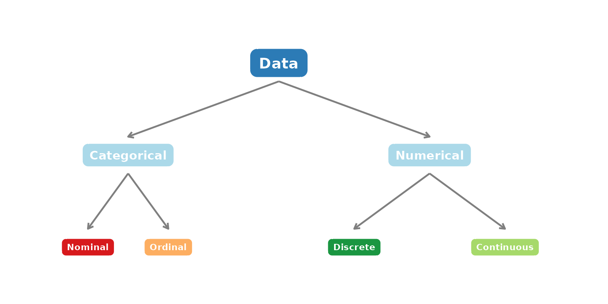
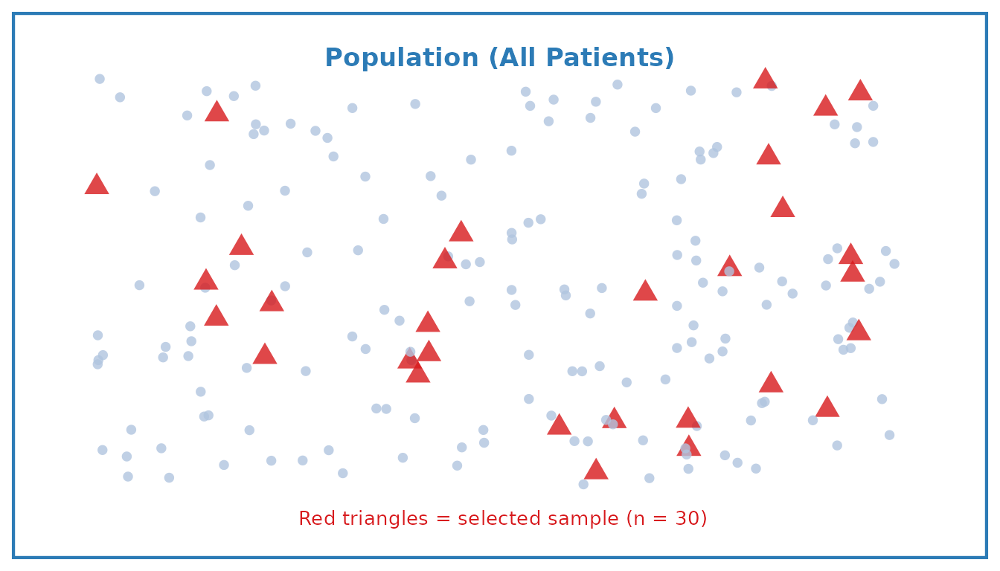

Data in Health Science
Introduction
Data Types
What is Data?
Data are pieces of information collected from observations or measurements. In health science, data come from patients, experiments, surveys, or medical records.
Example: A nurse records the blood pressure, age, gender, pain score, and discharge status of every patient on the ward. Each of these recorded pieces of information is data.
Data can be broadly divided into two major types:
- Categorical Data — data that represent categories or groups
- Numerical Data — data that represent measurable quantities
Categorical Data
Categorical data place individuals into groups. There are two subtypes:
Nominal Data
Nominal data have no natural order among categories. You can only say things are different, not bigger or smaller.
Ordinal Data
Ordinal data have a natural order, but the distance between categories is not necessarily equal.
Numerical Data
Numerical data represent actual measured or counted quantities. There are two subtypes:
Discrete Data
Discrete data are counted and can only take whole number values. There are no meaningful values between two consecutive counts.
Continuous Data
Continuous data are measured and can take any value within a range, including decimals.
Summary: Data Type Classification
Population and Sample
Population
A population is the complete set of all individuals or observations that we are interested in studying.
In health research, populations are usually very large and it is impractical or impossible to collect data from everyone.
Example: All patients with Type 2 diabetes in Thailand.
Sample
A sample is a subset of the population that is actually studied. We use the sample to draw conclusions (make inferences) about the whole population.
Example: 200 patients with Type 2 diabetes selected from 5 hospitals in Bangkok.
Key Terms
| Term | Definition | Health Science Example |
|---|---|---|
| Population | The entire group of interest | All nurses working in Thailand |
| Sample | A selected subset of the population | 500 nurses randomly selected from 10 hospitals |
| Parameter | A numerical summary describing the population (e.g., population mean mu) | The true average age of ALL nurses in Thailand |
| Statistic | A numerical summary calculated from the sample (e.g., sample mean xbar) | The average age calculated from our 500 nurses |
| Variable | A characteristic being measured or observed (e.g., age, blood pressure) | Age, gender, years of experience, ward type |
| Observation | A single recorded value for one individual | Nurse A: age = 28, female, 3 years experience |
Population vs. Sample: Visual Concept

Key Takeaways
Examples
Example 1: Classify Each Variable
A nurse researcher collects the following information from 50 patients admitted to a medical ward:
| Variable | Recorded Values |
|---|---|
| Patient ID | 001, 002, 003, … |
| Age | 45, 62, 38, … (years) |
| Gender | Male, Female |
| Blood type | A, B, AB, O |
| Systolic blood pressure | 118, 135, 142, … (mmHg) |
| Pain score | 0–10 scale |
| Number of medications | 1, 2, 3, … |
| Discharge status | Recovered, Transferred, Deceased |
Example 2: Population or Sample?
For each situation below, identify whether the group described is a population or a sample:
(a) A hospital wants to know the average job satisfaction of all 320 nurses working there. The HR department surveys all 320 nurses.
(b) A researcher wants to study pain levels in post-operative patients across Thailand. She recruits 150 patients from 3 hospitals in Chiang Mai.
(c) A nursing student studies the blood glucose levels of the 8 diabetic patients currently assigned to her ward.
Exercises
End of Chapter 1